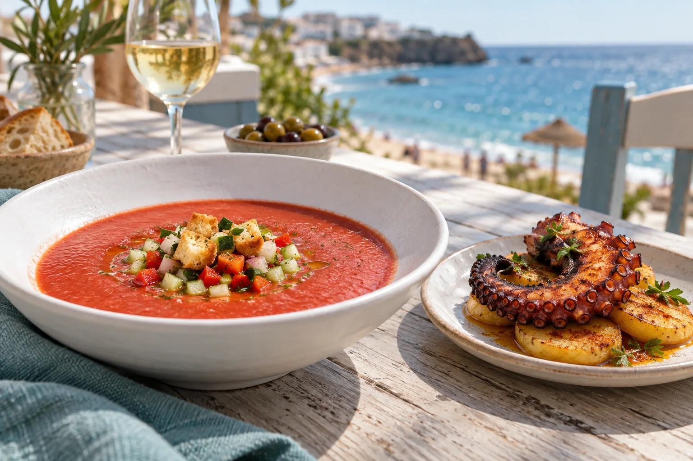

01
Para zarpar
Gazpacho andaluz con guarnición
7.00 €Ensaladilla rusa
9.50 €Berenjenas fritas con miel de caña
9.95 €Ensaladilla de pimientos
9.95 €Ensalada mixta Caleta
13.50 €Tomate azul con aguacate y melva
14.50 €Ensalada de sorbete de mango
14.95 €Tartar de salmón
19.00 €Tartar de atún rojo
23.00 €
02